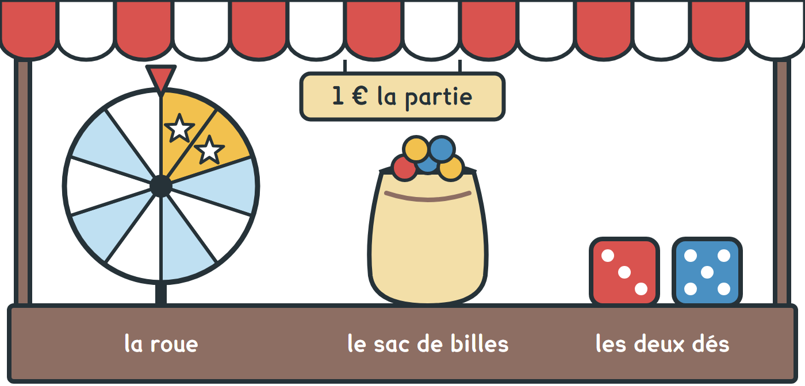
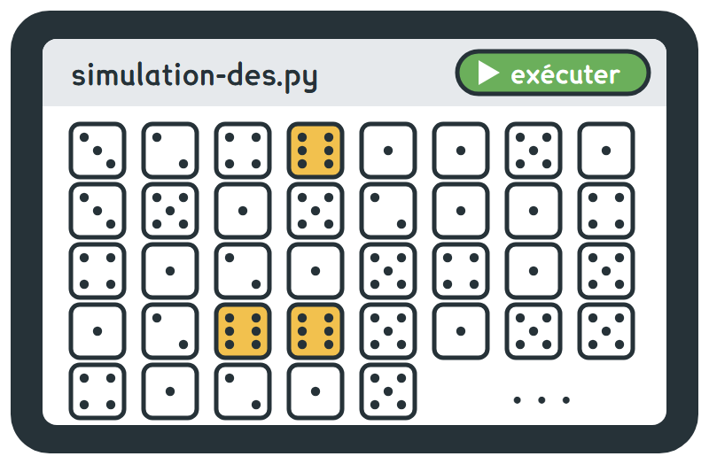

CAP Électricien · 1re année
Dix parties ne disent presque rien, dix mille disent la probabilité. La machine lance pour nous, et la fréquence finit par se poser.
3 questions · 4 exercices · 15 items d'entraînement · 2 figures
Savoirs travaillés
Un dé truqué se voit en combien de lancers ? Garde ta réponse du premier jour. Aujourd’hui, la machine lance à ta place, des milliers de fois.

Sur la tablette, ouvre la kermesse au niveau CAP. La roue a 10 secteurs, dont 2 étoilés : une partie sur cinq, en moyenne, rapporte un lot. Tu joues d’abord au doigt, puis la machine joue des centaines de parties.
fréquence = lots gagnés ÷ parties jouées
3 lots en 10 parties : 3 ÷ 10 = 0,3.
Série · SP
Plus on joue, plus la fréquence se rapproche de la probabilité. Sur 10 parties, elle va de 0 à 0,5 ; sur 10 000, elle se pose près de 0,2. On dit qu’elle se stabilise.
« Elle a perdu cinq fois, elle va finir par gagner. » La roue n’a pas de mémoire : à chaque partie, elle repart à deux chances sur dix.

Le fichier simulation-des.py, dans la console Python :
from random import randint
def nombre_de_six(lancers):
six = 0
for i in range(lancers):
if randint(1, 6) == 6:
six = six + 1
return six
print(nombre_de_six(60))On l’exécute trois fois, puis on remplace 60 par 6000 et par 60000, sans espace. Pour comparer, on ramène chaque nombre de 6 à une fréquence : on le divise par le nombre de lancers.
Exercice · SP
Dire en une phrase ce que fait ce programme quand on l’exécute.
Exercice · SP
La machine a lancé le dé 60 000 fois et obtenu 10 092 six. Quelle est la fréquence du 6, arrondie au centième ?
Série · SP
Série · CN
Exercice · SP
Dans le programme, on remplace randint(1, 6) par randint(1, 20) et on lance 60 000 fois. Vers quelle fréquence du 6 va-t-on, en nombre décimal ?
Exercice · SP
On remet randint(1, 6), puis on remplace == 6 par >= 5 : le programme compte maintenant les 5 et les 6. Vers quelle fréquence va-t-on, arrondie au centième ?
Sur peu de lancers, la fréquence change d’une série à l’autre ; sur beaucoup, elle se stabilise près de la probabilité. Et un dé n’a pas de mémoire : à chaque lancer, il repart à une chance sur six.
Ce site rappelle la méthode. Aucun corrigé, rien n'est noté.